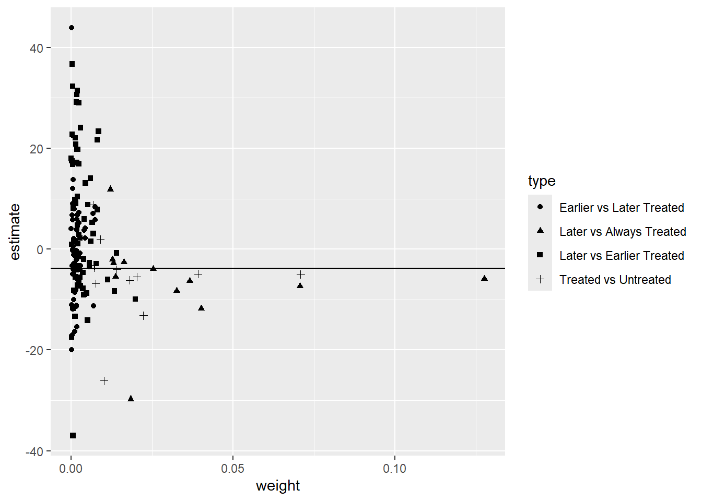
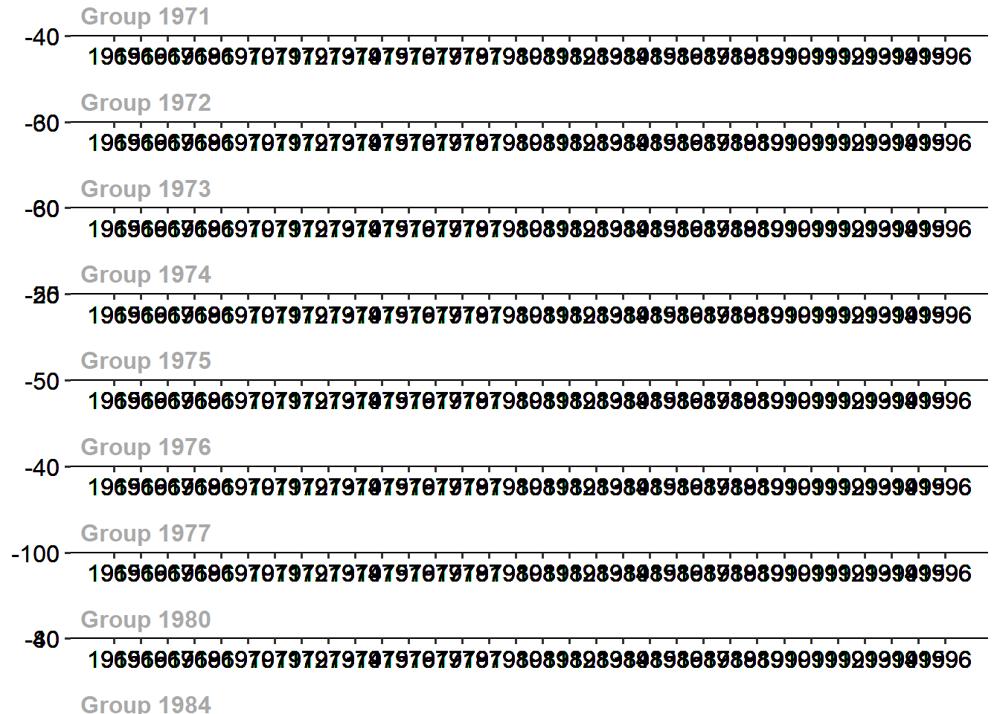
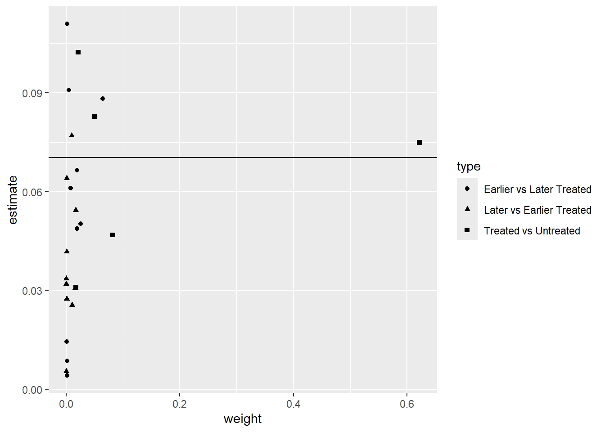

wd <- divorce %>%
filter(year>=1964 & year<=1996 & sex==2) %>%
mutate(suicide_rate=suicide*1000000/(stpop*fshare),
year=as.numeric(year),
divyear = ifelse(divyear>1996, Inf, divyear),
unilateral=ifelse(year>divyear, 1, 0))Respuestas a la tarea 3
Pregunta 1
Stevenson, B. & Wolfers, J. (2006)1 estudian los efectos de la introducción de leyes que permiten el divorcio unilateral en los Estados Unidos. La librería bacondecomp incluye los datos usados en dicho artículo (debe instalar y cargar la librería). Usaremos los datos de 1964 a 1996 para mostrar cómo impactan las leyes de divorcio express (unilateral) a la tasa de suicidios en mujeres.
Al correr el pedazo de código anterior, obtendrá un objeto de datos wd en donde la variable de impacto es la tasa de suicidios en mujeres, suicide_rate, st identifica a los estados, year identifica a los años y divyear es el año en que se introdujo la legislación del divorcio unilateral. La última fila del código crea el indicador de tratamiento unilaterial, que toma el valor de 1 para los estados tratados en los periodos post tratamiento.
[5 puntos] ¿Por qué decimos que esta es una aplicación de la estimación de efectos de tratamiento con adopción escalonada?
En esta aplicación, cada estado comienza a ser tratado en indistintos momentos del tiempo. Si hacemos un tabulado de divyear para un año fijo, notamos cuántos estados se vuelven tratados en cada año:
table(filter(wd, year==1996)$divyear)1950 1969 1970 1971 1972 1973 1974 1975 1976 1977 1980 1984 1985 Inf 9 2 2 7 3 11 3 2 1 3 1 1 1 5El panel comienza en 1964, para cuando ya nueve estados habían sido tratados. Los estados van siendo tratados hasta que, para el fin del periodo analizado, 1996, solo cinco todavía no habían sido tratados. En esta aplicación, esos cinco estados son los nunca tratados.
[5 puntos] Como punto de partida, estime el efecto del tratamiento sobre suicide_rate usando efectos fijos por estado y año (TWFE) y empleando una librería específica para efectos fijos, como felm. Tome en cuenta la agrupación de los errores. Interprete sus resultados.
Usando felm:
summary(felm(suicide_rate ~ unilateral | st + year | 0 | st, data = wd))Call: felm(formula = suicide_rate ~ unilateral | st + year | 0 | st, data = wd) Residuals: Min 1Q Median 3Q Max -37.517 -6.157 -0.141 5.577 57.004 Coefficients: Estimate Cluster s.e. t value Pr(>|t|) unilateral -3.777 2.201 -1.716 0.0923 . --- Signif. codes: 0 '***' 0.001 '**' 0.01 '*' 0.05 '.' 0.1 ' ' 1 Residual standard error: 10.85 on 1599 degrees of freedom Multiple R-squared(full model): 0.6844 Adjusted R-squared: 0.668 Multiple R-squared(proj model): 0.007963 Adjusted R-squared: -0.04353 F-statistic(full model, *iid*):41.77 on 83 and 1599 DF, p-value: < 2.2e-16 F-statistic(proj model): 2.945 on 1 and 50 DF, p-value: 0.09231[5 puntos] Compruebe que puede obtener el mismo resultado con una regresión lineal usando el paquete lm e incluyendo, además de la variable de tratamiento, dummies de estado y de año.
Estimamos con dummies:
summary(m1 <- lm(suicide_rate ~ unilateral + factor(st) + factor(year), data = wd))$coef[1:2,1:3]Estimate Std. Error t value (Intercept) 56.732642 2.468251 22.984953 unilateral -3.776552 1.054148 -3.582562Luego estimamos errores agrupados:
stargazer(m1, type = 'text', se = list(sqrt(diag(vcovCR(m1, cluster = wd$st, type = 'CR1')))), keep = c("unilateral"))=============================================== Dependent variable: --------------------------- suicide_rate ----------------------------------------------- unilateral -3.777* (2.200) ----------------------------------------------- Observations 1,683 R2 0.684 Adjusted R2 0.668 Residual Std. Error 10.851 (df = 1599) F Statistic 41.770*** (df = 83; 1599) =============================================== Note: *p<0.1; **p<0.05; ***p<0.01Obtenemos los mismos coeficientes. Aquí también podrán volver a comprobar la importancia de usar errores agrupados. Sin agrupar, el error estimado asumiendo independencia es casi menos de la mitad que el estimado con la matriz de varianzas agrupada.
[10 puntos] Realice la descomposición de Goodman-Bacon (2021). Construya un gráfico donde muestre en el eje \(x\) el peso otorgado a cada comparación 2x2 que el estimador de TWFE realiza mecánicamente y en el eje \(y\) el efecto estimado correspondiente a cada comparación. Interprete el gráfico obtenido.
Como vimos en clase, la descomposición de Bacon se puede obtener con la función bacon:
#Goodman-Bacon decomposition df_bacon <- bacon(suicide_rate ~ unilateral, data = wd, id_var = "st", time_var = "year")type weight avg_est 1 Earlier vs Later Treated 0.11558 0.13489 2 Later vs Always Treated 0.41990 -6.95245 3 Later vs Earlier Treated 0.23125 2.33743 4 Treated vs Untreated 0.23328 -6.05881coef_bacon <- sum(df_bacon$estimate * df_bacon$weight) print(paste("Weighted sum of decomposition =", round(coef_bacon, 4)))[1] "Weighted sum of decomposition = -3.7766"twfe <- felm(suicide_rate ~ unilateral | st + year | 0 | st, data = wd) #Gráfico---- df_bacon %>% ggplot(aes(x=weight, y=estimate, shape=type)) + geom_point() + geom_hline(yintercept = round(twfe$coefficients, 4))
Las comparaciones que más pesan en el estimador de efectos fijos son las de estados tratados con los que siempre estuvieron tratados en el panel, recibiendo dos de esas comparaciones alrededor de 13 y el 7% del peso (los dos triángulos más hacia la derecha). otra comparación que recibe alrededor de 7% del peso es la de los tratados con los nunca tratados (cruz más hacia la derecha). En total, las comparaciones con los estados que iniciaron siendo tratados se llevan el 42% del peso. Las comparaciones entre los tratados tarde y los tratados temprano también reciben un peso alto de 23%.
[10 puntos] Implemente el estimador de Callaway & Sant’Anna (2021) para estimar los efectos del tratamiento específicos para cada cohorte, usando el paquete did. Utilice como grupo de comparación los estados nunca tratados. La columna stid es un identificador numérico de los estados (lo requerirá cuando use att_gt del paquete did).
atts_nyt <- att_gt(yname = "suicide_rate", tname = "year", idname = "stid", gname = "divyear", data = wd, control_group = "nevertreated", est_method = 'reg', bstrap = TRUE, biters = 1000, print_details = FALSE, panel = TRUE) summary(atts_nyt)Call: att_gt(yname = "suicide_rate", tname = "year", idname = "stid", gname = "divyear", data = wd, panel = TRUE, control_group = "nevertreated", bstrap = TRUE, biters = 1000, est_method = "reg", print_details = FALSE) Reference: Callaway, Brantly and Pedro H.C. Sant'Anna. "Difference-in-Differences with Multiple Time Periods." Journal of Econometrics, Vol. 225, No. 2, pp. 200-230, 2021. <https://doi.org/10.1016/j.jeconom.2020.12.001>, <https://arxiv.org/abs/1803.09015> Group-Time Average Treatment Effects: Group Time ATT(g,t) Std. Error [95% Simult. Conf. Band] 1969 1965 -0.2781 6.8382 -32.3676 31.8115 1969 1966 -3.1857 11.9395 -59.2143 52.8429 1969 1967 12.5043 8.7761 -28.6793 53.6879 1969 1968 3.1310 7.6537 -32.7857 39.0478 1969 1969 1.1566 6.5207 -29.4431 31.7564 1969 1970 -3.5412 12.8268 -63.7336 56.6513 1969 1971 -6.7647 10.9734 -58.2598 44.7305 1969 1972 1.7696 10.9083 -49.4199 52.9591 1969 1973 2.7611 7.4689 -32.2884 37.8106 1969 1974 -0.3084 8.7252 -41.2535 40.6366 1969 1975 -0.7421 4.9207 -23.8336 22.3494 1969 1976 -10.6073 7.3219 -44.9670 23.7524 1969 1977 -3.9320 11.4500 -57.6635 49.7996 1969 1978 -14.0099 11.7870 -69.3229 41.3031 1969 1979 -8.1059 15.3837 -80.2972 64.0853 1969 1980 -10.6943 7.3175 -45.0330 23.6445 1969 1981 -3.4755 11.1729 -55.9069 48.9559 1969 1982 -7.0072 8.8546 -48.5594 34.5451 1969 1983 5.1998 13.0697 -56.1327 66.5322 1969 1984 -10.0771 12.8976 -70.6019 50.4476 1969 1985 5.9598 16.8090 -72.9201 84.8396 1969 1986 -8.5962 11.1093 -60.7290 43.5366 1969 1987 -8.6897 7.3489 -43.1760 25.7967 1969 1988 -11.9815 8.1718 -50.3292 26.3662 1969 1989 -5.9781 14.7507 -75.1989 63.2428 1969 1990 -7.7327 11.1769 -60.1827 44.7173 1969 1991 -14.7659 10.6440 -64.7151 35.1833 1969 1992 -6.6956 6.6601 -37.9493 24.5582 1969 1993 0.5290 12.7587 -59.3439 60.4019 1969 1994 -6.1575 15.3976 -78.4139 66.0989 1969 1995 -6.7870 16.7453 -85.3680 71.7941 1969 1996 3.0338 13.4027 -59.8612 65.9289 1970 1965 3.9098 3.0983 -10.6297 18.4492 1970 1966 -5.7213 10.1469 -53.3378 41.8952 1970 1967 10.0224 8.5022 -29.8758 49.9206 1970 1968 -5.3764 9.2790 -48.9202 38.1674 1970 1969 10.5202 5.3871 -14.7599 35.8002 1970 1970 5.6377 6.8540 -26.5262 37.8017 1970 1971 1.3987 5.1389 -22.7168 25.5142 1970 1972 1.3331 10.0432 -45.7966 48.4628 1970 1973 -13.0254 4.1490 -32.4956 6.4448 1970 1974 -12.7744 4.9304 -35.9112 10.3623 1970 1975 -15.3434 4.8444 -38.0768 7.3899 1970 1976 -19.8605 3.9697 -38.4890 -1.2320 * 1970 1977 -19.5551 5.7515 -46.5452 7.4350 1970 1978 -33.3382 10.9449 -84.6993 18.0229 1970 1979 -30.5087 13.5404 -94.0499 33.0324 1970 1980 -44.6366 11.5900 -99.0251 9.7518 1970 1981 -34.0557 11.3378 -87.2608 19.1495 1970 1982 -38.7875 10.1175 -86.2662 8.6912 1970 1983 -32.9234 17.6200 -115.6092 49.7623 1970 1984 -34.0625 18.6773 -121.7098 53.5849 1970 1985 -30.6346 19.3823 -121.5900 60.3208 1970 1986 -37.0754 20.2897 -132.2893 58.1384 1970 1987 -37.6630 22.4908 -143.2060 67.8799 1970 1988 -43.0563 21.5567 -144.2157 58.1030 1970 1989 -45.1314 18.6974 -132.8727 42.6099 1970 1990 -43.1765 21.0074 -141.7583 55.4053 1970 1991 -49.9116 20.9584 -148.2635 48.4403 1970 1992 -50.9515 16.3952 -127.8894 25.9864 1970 1993 -44.5526 22.6533 -150.8578 61.7526 1970 1994 -51.5405 17.7308 -134.7458 31.6648 1970 1995 -48.4108 22.1367 -152.2919 55.4703 1970 1996 -48.0618 21.9354 -150.9984 54.8749 1971 1965 -0.3060 3.6880 -17.6126 17.0006 1971 1966 -12.4375 10.1448 -60.0439 35.1690 1971 1967 17.0967 8.9910 -25.0953 59.2888 1971 1968 2.6186 7.8819 -34.3690 39.6063 1971 1969 -2.1268 5.7569 -29.1423 24.8887 1971 1970 5.7625 7.4396 -29.1496 40.6745 1971 1971 -9.3866 7.2873 -43.5839 24.8106 1971 1972 -13.8393 7.2955 -48.0750 20.3963 1971 1973 -12.4602 9.0597 -54.9750 30.0546 1971 1974 0.1729 5.6274 -26.2348 26.5806 1971 1975 -8.8785 7.8247 -45.5976 27.8406 1971 1976 -7.7923 6.0931 -36.3855 20.8009 1971 1977 -6.3192 7.8899 -43.3441 30.7057 1971 1978 -17.4985 11.2901 -70.4797 35.4827 1971 1979 -16.1999 5.9332 -44.0424 11.6427 1971 1980 -22.5395 5.8754 -50.1112 5.0322 1971 1981 -12.5894 7.4755 -47.6695 22.4908 1971 1982 -20.6385 10.8185 -71.4066 30.1295 1971 1983 -11.0888 5.5045 -36.9198 14.7421 1971 1984 -12.7478 6.3727 -42.6533 17.1576 1971 1985 -9.3683 8.1737 -47.7252 28.9887 1971 1986 -16.9260 7.2912 -51.1414 17.2894 1971 1987 -12.9962 11.7642 -68.2023 42.2100 1971 1988 -14.6487 8.7638 -55.7747 26.4772 1971 1989 -18.7126 9.1091 -61.4590 24.0339 1971 1990 -17.6198 6.9309 -50.1442 14.9047 1971 1991 -17.2789 9.4656 -61.6984 27.1407 1971 1992 -22.1825 10.2977 -70.5064 26.1415 1971 1993 -9.1278 9.8686 -55.4384 37.1828 1971 1994 -13.7091 8.9495 -55.7064 28.2882 1971 1995 -15.3270 6.9810 -48.0867 17.4326 1971 1996 -11.2124 9.5425 -55.9927 33.5679 1972 1965 3.3603 2.6270 -8.9673 15.6878 1972 1966 -5.2709 11.0427 -57.0912 46.5495 1972 1967 8.3599 9.0500 -34.1091 50.8289 1972 1968 5.3444 7.7807 -31.1683 41.8571 1972 1969 -6.1540 5.8937 -33.8116 21.5036 1972 1970 5.3754 5.2916 -19.4563 30.2072 1972 1971 -0.7708 5.5108 -26.6312 25.0897 1972 1972 -5.3078 5.4767 -31.0084 20.3928 1972 1973 -7.1261 9.4416 -51.4328 37.1805 1972 1974 -4.3635 5.4062 -29.7332 21.0063 1972 1975 -10.7104 6.6081 -41.7202 20.2993 1972 1976 -8.5659 8.3652 -47.8212 30.6893 1972 1977 -1.7264 4.1576 -21.2369 17.7840 1972 1978 -19.5471 7.8397 -56.3366 17.2425 1972 1979 -9.7870 10.3134 -58.1847 38.6107 1972 1980 -16.4149 6.2237 -45.6207 12.7909 1972 1981 -4.6831 4.7749 -27.0901 17.7239 1972 1982 -9.8129 9.6573 -55.1320 35.5063 1972 1983 -5.7570 7.0909 -39.0324 27.5184 1972 1984 -11.1817 6.4213 -41.3151 18.9517 1972 1985 -8.5492 8.5217 -48.5393 31.4408 1972 1986 -3.2909 6.0279 -31.5782 24.9964 1972 1987 -14.5853 7.5315 -49.9283 20.7578 1972 1988 -12.6795 6.9228 -45.1662 19.8073 1972 1989 -10.9845 7.8409 -47.7797 25.8108 1972 1990 -7.7794 7.4332 -42.6611 27.1023 1972 1991 -13.7033 5.5483 -39.7400 12.3335 1972 1992 -11.0100 9.6325 -56.2127 34.1928 1972 1993 -17.3770 7.6351 -53.2064 18.4524 1972 1994 -16.6543 8.3614 -55.8919 22.5832 1972 1995 -16.0626 6.8588 -48.2492 16.1239 1972 1996 -13.6292 5.2828 -38.4197 11.1614 1973 1965 0.3154 3.6468 -16.7980 17.4287 1973 1966 -10.0893 10.2553 -58.2145 38.0358 1973 1967 16.0570 9.3034 -27.6010 59.7150 1973 1968 -4.8486 8.6331 -45.3612 35.6640 1973 1969 3.3129 5.7112 -23.4884 30.1141 1973 1970 5.5555 6.7817 -26.2691 37.3800 1973 1971 -2.0683 7.1616 -35.6756 31.5390 1973 1972 -0.9275 6.7808 -32.7477 30.8926 1973 1973 4.4106 8.3882 -34.9529 43.7740 1973 1974 3.2944 6.5108 -27.2589 33.8476 1973 1975 0.0725 11.7951 -55.2786 55.4237 1973 1976 -1.1180 6.5947 -32.0651 29.8292 1973 1977 2.7203 5.9761 -25.3239 30.7645 1973 1978 -10.3862 9.0677 -52.9383 32.1659 1973 1979 -3.4722 7.4858 -38.6008 31.6565 1973 1980 -11.7465 7.7459 -48.0960 24.6029 1973 1981 -3.1322 7.6931 -39.2335 32.9690 1973 1982 -7.8264 10.7927 -58.4734 42.8206 1973 1983 -4.3281 6.1686 -33.2757 24.6195 1973 1984 -10.3847 6.9995 -43.2313 22.4619 1973 1985 -3.3503 7.5338 -38.7045 32.0038 1973 1986 -9.9416 4.8044 -32.4872 12.6039 1973 1987 -10.5611 9.3664 -54.5150 33.3928 1973 1988 -13.3770 10.1648 -61.0773 34.3233 1973 1989 -9.7072 7.3861 -44.3679 24.9534 1973 1990 -12.5464 6.5200 -43.1429 18.0501 1973 1991 -15.9396 7.8969 -52.9974 21.1182 1973 1992 -17.9985 7.7898 -54.5538 18.5569 1973 1993 -13.8426 8.4559 -53.5236 25.8385 1973 1994 -9.0985 5.9768 -37.1458 18.9489 1973 1995 -12.4104 4.0303 -31.3236 6.5028 1973 1996 -14.4985 5.5512 -40.5485 11.5515 1974 1965 -1.7117 5.3622 -26.8751 23.4518 1974 1966 -3.7313 10.8591 -54.6900 47.2273 1974 1967 9.6967 8.7827 -31.5178 50.9113 1974 1968 -5.6736 8.3372 -44.7977 33.4505 1974 1969 4.7497 5.4770 -20.9523 30.4518 1974 1970 8.9528 5.3718 -16.2554 34.1610 1974 1971 -8.1562 5.5379 -34.1441 17.8318 1974 1972 5.1631 4.0890 -14.0252 24.3514 1974 1973 -4.1358 6.9983 -36.9767 28.7050 1974 1974 -1.5277 4.7457 -23.7977 20.7424 1974 1975 -0.2490 4.7791 -22.6757 22.1778 1974 1976 -4.6623 3.8796 -22.8681 13.5435 1974 1977 -3.6545 7.0325 -36.6558 29.3468 1974 1978 -9.4996 5.6956 -36.2276 17.2283 1974 1979 -1.7953 10.1176 -49.2742 45.6836 1974 1980 -10.9157 5.1007 -34.8520 13.0206 1974 1981 -2.9438 7.7687 -39.3999 33.5124 1974 1982 -6.1358 4.9513 -29.3707 17.0991 1974 1983 -2.2347 8.3499 -41.4182 36.9488 1974 1984 -7.2784 6.7759 -39.0758 24.5190 1974 1985 0.9048 10.9594 -50.5246 52.3342 1974 1986 -3.4953 9.1051 -46.2230 39.2324 1974 1987 -9.3045 8.5199 -49.2860 30.6770 1974 1988 -9.0434 8.5952 -49.3780 31.2911 1974 1989 -6.4758 9.7626 -52.2887 39.3371 1974 1990 -7.6369 8.7936 -48.9028 33.6290 1974 1991 -14.7133 7.7174 -50.9289 21.5022 1974 1992 -14.7711 7.9409 -52.0355 22.4934 1974 1993 -11.2274 9.1194 -54.0220 31.5671 1974 1994 -14.4350 11.1360 -66.6930 37.8230 1974 1995 -13.4194 10.1439 -61.0218 34.1830 1974 1996 -14.8017 10.6792 -64.9160 35.3127 1975 1965 19.2544 6.0641 -9.2026 47.7114 1975 1966 -10.7092 10.1469 -58.3257 36.9073 1975 1967 9.6526 8.7761 -31.5310 50.8362 1975 1968 5.2146 8.8920 -36.5128 46.9421 1975 1969 -2.1343 8.3120 -41.1400 36.8715 1975 1970 -5.6035 9.6454 -50.8666 39.6596 1975 1971 3.4917 9.2692 -40.0059 46.9893 1975 1972 -15.0108 7.8137 -51.6781 21.6565 1975 1973 9.7321 7.1463 -23.8035 43.2677 1975 1974 0.5633 5.7006 -26.1878 27.3144 1975 1975 -4.9361 5.5333 -30.9021 21.0299 1975 1976 -1.1020 4.5964 -22.6714 20.4675 1975 1977 -4.3766 7.9939 -41.8897 33.1365 1975 1978 -8.3191 7.4167 -43.1234 26.4851 1975 1979 -12.7262 15.5268 -85.5891 60.1368 1975 1980 -12.3662 5.1199 -36.3921 11.6598 1975 1981 -7.7023 6.3178 -37.3498 21.9451 1975 1982 -9.7198 9.3131 -53.4237 33.9841 1975 1983 -7.3926 5.4921 -33.1656 18.3804 1975 1984 8.8507 1.8324 0.2520 17.4494 * 1975 1985 -5.6163 8.3116 -44.6204 33.3877 1975 1986 -5.2183 4.5029 -26.3493 15.9127 1975 1987 -0.8638 5.3408 -25.9267 24.1992 1975 1988 -15.3668 11.0217 -67.0882 36.3547 1975 1989 -5.4933 6.3170 -35.1372 24.1506 1975 1990 8.5067 4.0466 -10.4827 27.4960 1975 1991 0.7631 6.0058 -27.4202 28.9465 1975 1992 -4.2255 6.6674 -35.5139 27.0628 1975 1993 1.1200 2.9348 -12.6523 14.8922 1975 1994 -8.3655 7.5932 -43.9979 27.2670 1975 1995 1.8041 4.1836 -17.8283 21.4365 1975 1996 -6.9207 5.2796 -31.6964 17.8550 1976 1965 -9.2525 2.4129 -20.5754 2.0703 1976 1966 -7.3839 10.1469 -55.0004 40.2326 1976 1967 6.1953 8.7761 -34.9883 47.3789 1976 1968 -3.4100 7.6537 -39.3267 32.5068 1976 1969 -4.5734 6.2645 -33.9711 24.8242 1976 1970 13.6356 5.2394 -10.9513 38.2225 1976 1971 2.1590 5.5379 -23.8290 28.1469 1976 1972 -1.4512 3.9106 -19.8027 16.9003 1976 1973 -23.5440 5.9422 -51.4292 4.3412 1976 1974 37.6970 4.8065 15.1416 60.2523 * 1976 1975 -5.8620 5.1960 -30.2455 18.5215 1976 1976 7.3375 6.7834 -24.4949 39.1699 1976 1977 35.4928 7.3478 1.0119 69.9736 * 1976 1978 -2.2158 3.3756 -18.0565 13.6250 1976 1979 2.7599 11.1105 -49.3786 54.8985 1976 1980 -10.1277 5.1657 -34.3691 14.1136 1976 1981 -9.1249 7.6546 -45.0459 26.7961 1976 1982 -9.7529 5.2585 -34.4297 14.9238 1976 1983 -12.2793 7.8075 -48.9176 24.3590 1976 1984 -20.1148 4.7838 -42.5639 2.3344 1976 1985 -0.2053 11.6139 -54.7060 54.2953 1976 1986 -27.7992 8.3181 -66.8335 11.2351 1976 1987 -9.9985 5.2150 -34.4712 14.4743 1976 1988 -22.8540 6.2365 -52.1203 6.4123 1976 1989 -14.3020 6.6385 -45.4546 16.8505 1976 1990 -16.7275 4.8656 -39.5602 6.1052 1976 1991 -29.9838 5.7798 -57.1066 -2.8611 * 1976 1992 -35.9431 6.2168 -65.1166 -6.7696 * 1976 1993 -33.5630 6.2298 -62.7978 -4.3282 * 1976 1994 -19.1785 10.5829 -68.8409 30.4838 1976 1995 -18.8943 9.0197 -61.2210 23.4324 1976 1996 -20.0712 8.0000 -57.6127 17.4703 1977 1965 7.9420 11.7396 -47.1486 63.0326 1977 1966 -17.8103 11.2821 -70.7540 35.1335 1977 1967 22.0500 9.0500 -20.4190 64.5190 1977 1968 -12.0551 12.4499 -70.4789 46.3687 1977 1969 11.3299 11.8464 -44.2617 66.9216 1977 1970 7.9543 8.2658 -30.8348 46.7435 1977 1971 0.9514 9.6668 -44.4121 46.3150 1977 1972 -1.0798 9.8672 -47.3839 45.2244 1977 1973 -2.0153 8.7949 -43.2871 39.2564 1977 1974 -10.4409 5.6640 -37.0206 16.1389 1977 1975 -2.6782 7.0642 -35.8284 30.4721 1977 1976 7.5869 17.8595 -76.2226 91.3963 1977 1977 -0.3083 16.2160 -76.4052 75.7886 1977 1978 -18.5991 18.3081 -104.5135 67.3154 1977 1979 -8.3001 27.6717 -138.1552 121.5550 1977 1980 -13.4381 23.5917 -124.1471 97.2709 1977 1981 -12.1467 21.4042 -112.5906 88.2971 1977 1982 -17.4639 16.7689 -96.1557 61.2278 1977 1983 6.1362 32.6748 -147.1972 159.4696 1977 1984 -2.9191 23.2246 -111.9055 106.0673 1977 1985 -14.8995 21.9056 -117.6962 87.8971 1977 1986 -12.3230 14.3686 -79.7506 55.1047 1977 1987 -23.6769 27.4484 -152.4843 105.1304 1977 1988 -25.5547 22.8764 -132.9072 81.7978 1977 1989 -9.2602 30.0056 -150.0678 131.5473 1977 1990 -13.7369 29.0926 -150.2602 122.7864 1977 1991 -25.9731 24.2211 -139.6356 87.6894 1977 1992 -29.9220 23.0525 -138.1007 78.2567 1977 1993 -14.9531 26.3637 -138.6702 108.7641 1977 1994 -11.6033 34.8353 -175.0753 151.8686 1977 1995 -29.0098 22.0292 -132.3865 74.3669 1977 1996 -16.0590 22.3629 -121.0018 88.8838 1980 1965 -3.1314 2.4129 -14.4542 8.1915 1980 1966 -9.4644 10.1469 -57.0809 38.1520 1980 1967 12.2092 8.7761 -28.9744 53.3928 1980 1968 3.0528 7.6537 -32.8640 38.9696 1980 1969 -3.6543 6.2645 -33.0520 25.7433 1980 1970 12.7725 5.2394 -11.8144 37.3594 1980 1971 -11.0126 5.5379 -37.0005 14.9753 1980 1972 5.2094 3.9106 -13.1421 23.5609 1980 1973 -8.0378 5.9422 -35.9230 19.8474 1980 1974 2.0132 4.8065 -20.5422 24.5685 1980 1975 -3.8913 5.1960 -28.2748 20.4922 1980 1976 4.9514 6.7834 -26.8810 36.7837 1980 1977 -1.8244 3.8077 -19.6928 16.0441 1980 1978 -6.3410 7.7499 -42.7092 30.0273 1980 1979 5.7875 11.5127 -48.2385 59.8134 1980 1980 -12.0465 7.0875 -45.3062 21.2132 1980 1981 -7.2766 3.4559 -23.4941 8.9410 1980 1982 -7.7888 16.0014 -82.8789 67.3014 1980 1983 3.8986 3.9061 -14.4316 22.2288 1980 1984 -2.3172 6.7818 -34.1423 29.5078 1980 1985 4.4467 5.1164 -19.5630 28.4563 1980 1986 -9.5981 7.5428 -44.9944 25.7982 1980 1987 -10.0537 11.6490 -64.7189 44.6115 1980 1988 -10.9789 10.8204 -61.7559 39.7981 1980 1989 -6.9527 5.9212 -34.7391 20.8338 1980 1990 -5.3312 6.8183 -37.3273 26.6649 1980 1991 -8.8820 8.2207 -47.4592 29.6951 1980 1992 -12.0023 9.9672 -58.7754 34.7708 1980 1993 -8.3192 9.2339 -51.6512 35.0128 1980 1994 -12.5474 7.1011 -45.8710 20.7761 1980 1995 -6.7308 8.7926 -47.9919 34.5303 1980 1996 -9.1678 7.7440 -45.5080 27.1723 1984 1965 3.7550 2.4129 -7.5678 15.0779 1984 1966 -9.0520 10.1469 -56.6685 38.5645 1984 1967 10.1591 8.7761 -31.0245 51.3427 1984 1968 -3.1247 7.6537 -39.0415 32.7921 1984 1969 4.0091 6.2645 -25.3885 33.4068 1984 1970 4.9470 5.2394 -19.6398 29.5339 1984 1971 -12.3840 5.5379 -38.3720 13.6039 1984 1972 5.1482 3.9106 -13.2033 23.4997 1984 1973 -6.4124 5.9422 -34.2976 21.4728 1984 1974 -5.7358 4.8065 -28.2912 16.8195 1984 1975 -4.0919 5.1960 -28.4754 20.2916 1984 1976 8.7209 6.7834 -23.1115 40.5533 1984 1977 2.6679 3.8077 -15.2006 20.5363 1984 1978 -7.3955 7.7499 -43.7638 28.9727 1984 1979 2.2253 11.5127 -51.8007 56.2512 1984 1980 -8.3661 7.0875 -41.6258 24.8937 1984 1981 10.0008 5.6947 -16.7228 36.7244 1984 1982 -3.2324 10.2795 -51.4712 45.0064 1984 1983 11.0979 10.4009 -37.7103 59.9060 1984 1984 -1.6979 3.0943 -16.2186 12.8229 1984 1985 4.0744 3.8064 -13.7879 21.9367 1984 1986 -8.0341 2.9094 -21.6871 5.6190 1984 1987 -10.4189 8.0305 -48.1036 27.2657 1984 1988 -7.8277 5.8269 -35.1718 19.5164 1984 1989 -9.2894 3.8534 -27.3724 8.7937 1984 1990 -6.2529 2.9419 -20.0586 7.5527 1984 1991 -10.1584 4.9176 -33.2354 12.9185 1984 1992 -11.4694 6.6641 -42.7423 19.8034 1984 1993 -9.2844 4.8880 -32.2223 13.6535 1984 1994 -14.6630 5.2893 -39.4841 10.1581 1984 1995 -12.5044 3.7261 -29.9899 4.9810 1984 1996 -10.2449 3.2047 -25.2836 4.7938 1985 1965 -2.7099 2.4129 -14.0327 8.6130 1985 1966 29.3180 10.1469 -18.2984 76.9345 1985 1967 -6.8558 8.7761 -48.0394 34.3278 1985 1968 -5.9545 7.6537 -41.8713 29.9623 1985 1969 12.1675 6.2645 -17.2301 41.5652 1985 1970 12.3074 5.2394 -12.2795 36.8943 1985 1971 4.9424 5.5379 -21.0455 30.9304 1985 1972 5.1718 3.9106 -13.1797 23.5233 1985 1973 -41.2443 5.9422 -69.1295 -13.3591 * 1985 1974 9.0064 4.8065 -13.5489 31.5618 1985 1975 -9.1424 5.1960 -33.5259 15.2411 1985 1976 2.8125 6.7834 -29.0199 34.6449 1985 1977 -2.1400 3.8077 -20.0084 15.7285 1985 1978 5.7781 7.7499 -30.5901 42.1464 1985 1979 -3.8368 11.5127 -57.8627 50.1892 1985 1980 1.5265 7.0875 -31.7332 34.7863 1985 1981 -2.8105 5.6947 -29.5341 23.9131 1985 1982 13.2242 10.2795 -35.0147 61.4630 1985 1983 -5.5714 10.4009 -54.3796 43.2368 1985 1984 -5.5493 3.0943 -20.0701 8.9714 1985 1985 11.4728 6.8301 -20.5786 43.5243 1985 1986 10.1715 3.4372 -5.9584 26.3015 1985 1987 17.5291 5.0068 -5.9664 41.0246 1985 1988 -9.6423 3.9206 -28.0405 8.7560 1985 1989 19.8229 5.5383 -6.1667 45.8125 1985 1990 26.2350 2.5434 14.2997 38.1703 * 1985 1991 6.2209 3.4374 -9.9099 22.3518 1985 1992 18.3602 5.5364 -7.6204 44.3407 1985 1993 23.0343 2.8585 9.6204 36.4482 * 1985 1994 15.2612 6.2622 -14.1254 44.6479 1985 1995 15.4633 4.6990 -6.5877 37.5143 1985 1996 26.5282 3.9405 8.0367 45.0198 * --- Signif. codes: `*' confidence band does not cover 0 Control Group: Never Treated, Anticipation Periods: 0 Estimation Method: Outcome Regressionggdid(atts_nyt)
[10 puntos] Reporte los resultados agregados obtenidos a partir del estimador Callaway & Sant’Anna (2021), usando una agregación dinámica que muestre los efectos promedio para cada periodo antes y después del tratamiento. Grafique los resultados.
Graficamos:
agg.es <- aggte(atts_nyt, type = "dynamic") summary(agg.es)Call: aggte(MP = atts_nyt, type = "dynamic") Reference: Callaway, Brantly and Pedro H.C. Sant'Anna. "Difference-in-Differences with Multiple Time Periods." Journal of Econometrics, Vol. 225, No. 2, pp. 200-230, 2021. <https://doi.org/10.1016/j.jeconom.2020.12.001>, <https://arxiv.org/abs/1803.09015> Overall summary of ATT's based on event-study/dynamic aggregation: ATT Std. Error [ 95% Conf. Int.] -11.1957 3.4611 -17.9792 -4.4121 * Dynamic Effects: Event time Estimate Std. Error [95% Simult. Conf. Band] -20 -2.7099 2.4129 -9.2149 3.7951 -19 16.5365 9.4749 -9.0077 42.0808 -18 -7.9539 1.9546 -13.2236 -2.6842 * -17 2.1023 10.7240 -26.8094 31.0140 -16 4.5214 5.7128 -10.8802 19.9230 -15 4.3951 5.0088 -9.1086 17.8987 -14 0.1417 4.9743 -13.2689 13.5523 -13 1.6657 6.6557 -16.2780 19.6094 -12 -1.5362 9.6705 -27.6078 24.5354 -11 -9.1062 6.3987 -26.3569 8.1444 -10 10.5744 6.0711 -5.7933 26.9420 -9 -5.7346 4.2385 -17.1615 5.6923 -8 2.3457 2.6683 -4.8479 9.5393 -7 -1.6033 3.6908 -11.5536 8.3471 -6 4.3835 3.3708 -4.7040 13.4710 -5 -3.0193 3.1502 -11.5123 5.4737 -4 4.8722 2.4792 -1.8116 11.5561 -3 -0.3596 2.5134 -7.1356 6.4165 -2 1.1409 2.5019 -5.6042 7.8861 -1 1.9481 2.9000 -5.8703 9.7664 0 -0.8065 2.6062 -7.8328 6.2199 1 -2.7726 3.0538 -11.0056 5.4604 2 -4.2845 4.3508 -16.0142 7.4451 3 -3.9743 2.8235 -11.5865 3.6379 4 -4.5620 3.1542 -13.0655 3.9416 5 -7.4465 3.2356 -16.1697 1.2767 6 -6.2541 3.9152 -16.8094 4.3013 7 -10.6094 3.5291 -20.1238 -1.0949 * 8 -9.9746 3.4917 -19.3881 -0.5611 * 9 -10.1110 3.6022 -19.8225 -0.3995 * 10 -11.0023 3.7894 -21.2184 -0.7863 * 11 -12.2896 3.7351 -22.3594 -2.2198 * 12 -8.8234 4.3102 -20.4437 2.7969 13 -12.1880 4.2620 -23.6783 -0.6977 * 14 -11.2760 4.6118 -23.7092 1.1573 15 -14.8487 5.0261 -28.3989 -1.2984 * 16 -11.6965 4.6856 -24.3288 0.9358 17 -14.3232 4.9417 -27.6460 -1.0003 * 18 -17.1010 4.7229 -29.8338 -4.3682 * 19 -17.4748 4.5062 -29.6235 -5.3260 * 20 -14.9783 4.3917 -26.8183 -3.1384 * 21 -15.8960 4.4374 -27.8590 -3.9329 * 22 -15.2219 4.5927 -27.6038 -2.8400 * 23 -16.2453 4.8215 -29.2439 -3.2466 * 24 -17.8714 6.9812 -36.6926 0.9498 25 -17.0567 10.3942 -45.0792 10.9659 26 -27.4244 18.5988 -77.5663 22.7175 27 3.0338 14.4548 -35.9359 42.0036 --- Signif. codes: `*' confidence band does not cover 0 Control Group: Never Treated, Anticipation Periods: 0 Estimation Method: Outcome Regressionggdid(agg.es)
[5 puntos] ¿Cuáles son las ventajas del estimador de Callaway & Sant’Anna (2021) respecto al estimador de TWFE?
Las ventajas del estimador de Callaway & Sant’Anna respecto a TWFE son las siguientes: - Evita las comapraciones prohibidas (usar unidades tratadas como controles para unidades que son tratadas en periodos posteriores) - Hace explícito el grupo de comparación que se usa para comparar a las unidades tratadas - Hace explícita la manera en que se agregan los resultados de cada comparación \(ATT(g,t)\) - No impone efectos monótonos en el tiempo ni homogéneos entre unidades
Pregunta 2
La ENIGH 2020 incluyó un módulo para la evaluación del Programa Jóvenes Construyendo el futuro. Se buscó que la cobertura de la encuesta pudiera incluir suficientes participantes del programa para poder compararlos con los no participantes. Los datos en datos_jcf_analisis.csv fueron construidos a partir de dicha encuesta. En este ejercicio estimaremos el efecto de participar en el programa sobre el ingreso trimestral, ingtot_tri, usando métodos de matching.
Las siguientes variables están incluidas en el archivo de datos: mujer (dummy de sexo), indigena (dummy de pertenencia a una etnia), rural (dummy del ámbito rural), escoacum (años de escolaridad), casadounion (dummy para casados o en unión libre), jefehog (dummy para jefes del hogar), haymenores (dummy para la presencia de menores de edad en el hogar), proggob (dummy para beneficiarios de programas de gobierno), y tot_integ (número de miembros del hogar). También se incluye la clave de las entidades, cve_ent.
[5 puntos] Considere la comparación para el ingreso trimestral, ingtot_tri, entre beneficiarios y su grupo de comparación, que serán los jóvenes que no asisten a la escuela y no están empleados. Los beneficiarios tienen jcf2==1 y los jóvenes que no asisten a la escuela y no están empleados tienen jcf2==0. Muestre qué tan similares o qué tan diferentes son los individuos en ambos grupos en términos de las características indicadas anteriormente y del ingreso trimestral.
Estadística descriptiva:
data.jcf <- read_csv("../files/datos_jcf_analisis.csv") set.seed(1023)Aquí usé datasummary para calcular la estadística descriptiva por grupos:
datasummary(ingtot_tri + mujer + indigena + rural + escoacum + casadounion + jefehog + haymenores + proggob + tot_integ ~ factor(jcf2) * (mean + sd) * Arguments(na.rm=TRUE), fmt = "%.2f", data = data.jcf)mean sd mean sd ingtot_tri 1510.36 8478.60 9643.06 6632.56 mujer 0.76 0.43 0.59 0.49 indigena 0.22 0.41 0.59 0.49 rural 0.40 0.49 0.35 0.48 escoacum 10.39 3.23 12.03 2.70 casadounion 0.53 0.50 0.41 0.49 jefehog 0.06 0.23 0.14 0.35 haymenores 0.66 0.47 0.54 0.50 proggob 0.19 0.39 0.21 0.41 tot_integ 4.82 1.97 4.25 2.00 Claramente los individuos que participan en el programa son diferentes a los que no. En el programa hay una proporción menor de mujeres que en el grupo no tratado; en el grupo tratado hay un nivel mayor de escolaridad acumulada; y los individuos del grupo tratado viven en hogares más pequeños que los del grupo no tratado. Entre muchas otras diferencias.
El problema entonces es que existen factores que influyen en la probabilidad de recibir el tratamiento y en el ingreso, por lo que una comparación simple de individuos tratados y no tratados confundirá el efecto del tratamiento.
[5 puntos] Estime el TOT (TT o ATT) del programa en el ingreso trimestral, ingtot_tri usando el algoritmo de vecino más cercano. Para estimar el impacto en el ingreso trimestral se comparan a los beneficiarios de JCF con los jóvenes que no asisten a la escuela y no están empleados. Los beneficiarios tienen jcf2==1 y los jóvenes que no asisten a la escuela y no están empleados tienen jcf2==0. Escoja la especificación del propensity score que más le parezca adecuada. Realice la inferencia estadística con errores agrupados a nivel grupo de emparejamiento. ¿De qué tamaño es el TOT estimado y es este efecto estadísticamente significativo?
Este es el modelo para el propensity score que yo escogí:
sub.data <- data.jcf %>% dplyr::select(ingtot_tri, jcf2, mujer, indigena, cve_ent, rural, escoacum, casadounion, jefehog, haymenores, proggob, tot_integ, factor.x) sub.data <- sub.data[complete.cases(sub.data), ] m.out.a <- matchit(formula=jcf2 ~ mujer + indigena + factor(cve_ent) + rural + escoacum + casadounion + jefehog + haymenores + proggob + tot_integ, method = "nearest", distance= "glm", replace = FALSE, data = sub.data)Estimamos el efecto del tratamiento:
tt1 <- lm(ingtot_tri ~ jcf2, data = match.data(m.out.a)) #Errores agrupados a nivel subclass coeftest(tt1, vcov. = vcovCL, cluster = ~subclass)t test of coefficients: Estimate Std. Error t value Pr(>|t|) (Intercept) 1669.95 407.99 4.0931 5.735e-05 *** jcf2 7973.11 708.27 11.2572 < 2.2e-16 *** --- Signif. codes: 0 '***' 0.001 '**' 0.01 '*' 0.05 '.' 0.1 ' ' 1Se estima un efecto de 7973 pesos adicionales de ingreso trimestral para los participantes en el programa.
[5 puntos] En el matching de la parte b., evalúe qué tan bueno es el procedimiento en balancear las características observadas una vez realizado el matching. Cree un love plot para evaluar qué tan bueno es el procedimiento de matching para obtener una muestra balanceada.
bal.tab del paquete cobalt nos permite ver un resumen del balance:
#Con esto elimino las dummies de estado de la salida bal.tab(m.out.a, m.threshold=0.1, un=T)Balance Measures Type Diff.Un Diff.Adj M.Threshold distance Distance 1.1091 0.0881 Balanced, <0.1 mujer Binary -0.1660 0.0551 Balanced, <0.1 indigena Binary 0.3714 0.0551 Balanced, <0.1 factor(cve_ent)_01 Binary -0.1720 -0.0157 Balanced, <0.1 factor(cve_ent)_02 Binary -0.3428 -0.0079 Balanced, <0.1 factor(cve_ent)_03 Binary 0.0168 0.0079 Balanced, <0.1 factor(cve_ent)_04 Binary 0.5524 0.0157 Balanced, <0.1 factor(cve_ent)_05 Binary -0.0544 0.0000 Balanced, <0.1 rural Binary -0.0553 0.0709 Balanced, <0.1 escoacum Contin. 0.6086 -0.2096 Not Balanced, >0.1 casadounion Binary -0.1170 0.0709 Balanced, <0.1 jefehog Binary 0.0831 0.0551 Balanced, <0.1 haymenores Binary -0.1193 0.0787 Balanced, <0.1 proggob Binary 0.0220 0.0079 Balanced, <0.1 tot_integ Contin. -0.2856 0.0158 Balanced, <0.1 Balance tally for mean differences count Balanced, <0.1 14 Not Balanced, >0.1 1 Variable with the greatest mean difference Variable Diff.Adj M.Threshold escoacum -0.2096 Not Balanced, >0.1 Sample sizes Control Treated All 1894 127 Matched 127 127 Unmatched 1767 0Y finalmente el loveplot:
m.out.a[["X"]][["factor(cve_ent)"]] <- NULL love.plot(bal.tab(m.out.a), threshold = .1)
Parece haber un buen balance, aunque la educación es la única variable que no queda bien balanceada. Después del emparejamiento, las medias (estandarizadas) entre tratados y no tratados difieren en más de 0.1.
[5 puntos] Estime ahora el TOT en el ingreso trimestral, como en la parte b., pero usando un caliper de 0.1 y 3 vecinos a ser emparejados. ¿Cómo cambian sus resultados respecto a los de la parte b.?
sub.data <- data.jcf %>% dplyr::select(ingtot_tri, jcf2, mujer, indigena, cve_ent, rural, escoacum, casadounion, jefehog, haymenores, proggob, tot_integ, factor.x) sub.data <- sub.data[complete.cases(sub.data), ] m.out.c <- matchit(formula=jcf2 ~ mujer + indigena + factor(cve_ent) + rural + escoacum + casadounion + jefehog + haymenores + proggob + tot_integ, method = "nearest", distance= "glm", ratio = 3, caliper = 0.1, replace = FALSE, data = sub.data)Estimamos el efecto del tratamiento:
tt3 <- lm(ingtot_tri ~ jcf2, data = match.data(m.out.c)) #Errores agrupados a nivel subclass coeftest(tt3, vcov. = vcovCL, cluster = ~subclass)t test of coefficients: Estimate Std. Error t value Pr(>|t|) (Intercept) 2261.79 438.85 5.154 4.016e-07 *** jcf2 7302.34 717.02 10.184 < 2.2e-16 *** --- Signif. codes: 0 '***' 0.001 '**' 0.01 '*' 0.05 '.' 0.1 ' ' 1Se estima ahora un efecto de 7258 pesos, menor al efecto de 7973 pesos estimado en la parte b.
Notas
Stevenson, B. & Wolfers, J. (2006). Bargaining in the Shadow of the Law: Divorce Laws and Family Distress. The Quarterly Journal of Economics, 121(1), 267-288.↩︎